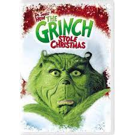

Dr Seuss how the Grinch stole Christmas
Cast: Jim Carrey, Taylor Momsen, Kelley, Jeffrey Tambor, Christine Baranski, Bill Irwin, Molly Shannon and Clint Howard
Age restriction: PG 12
- Mon-Thurs: 07h50 - 09h20
- Fri-Sun: 12h00 - 13h50, 18h00-19h20, 22h00-23h50
Movie synopsis
In this live-action adaptation of the beloved children's tale by Dr. Seuss, the reclusive green Grinch (Jim Carrey) decides to ruin Christmas for the cheery citizens of Whoville.
Reluctantly joined by his hapless dog, Max, the Grinch comes down from his mountaintop home and sneaks into town to swipe everything holiday-related from the Whos. However, the bitter
grump finds a hitch in his plans when he encounters the endearing Cindy Lou Who (Taylor Momsen).